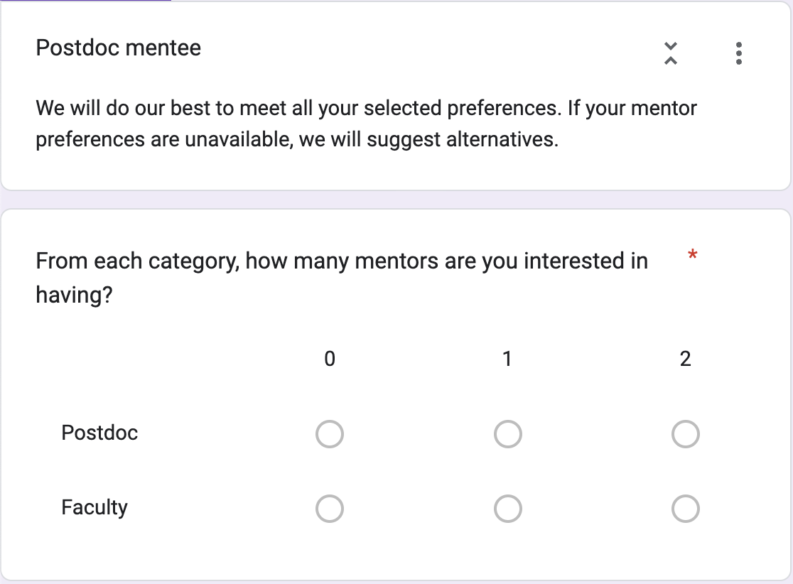

In this post, I describe the motivation, context, and execution of the creation of a novel framework for matching mentees and mentors into a comprehensive "mentorship network." If you're just here for the data science/visualization I'd skip to this section.
The problem with a traditional mentorship program structure
Traditional mentorship structures pair mentors/mentees into "dyads" but there are many axes to mentorship (emotional, professional, scientific, social, etc.) and it is a lot to expect a single mentor to fulfill all these different needs. This expectation places an immense burden on the mentor and can lead to the mentor feeling overwhelmed or, in some cases, even under-equipped to address the diverse needs of their mentees. Moreover, every individual has unique strengths and areas of expertise. Relying on a single mentor to fulfill all of a mentee's needs can result in gaps in guidance, as no one person truly possesses all of the necessary knowledge and skills. This can in turn limit a mentee's growth as they may not be able to get adequate support in areas where their primary mentor lacks experience.
Common advice for young professionals is to build a network of mentors that they can learn to ask different things of as they come up. But it can be difficult to do so if you're just starting out, and many mentorship programs are explicitly designed to pair people 1-1. Instead, if mentorship programs offered a networked mentorship structure, it could take advantage of the diverse talent and perspectives already present in an organization and immediately connect new members to a whole network of resources and support. Such a network would provide mentees with access to multiple mentors, each with their own set of expertise and experiences. This networked structure allows mentees to seek guidance from various mentors depending on their needs, ensuring they receive well-rounded support throughout their academic or professional journey.
Mentorship requires ongoing (external) support
A sustainable mentorship program should be designed to recognize that being a (good) mentor is difficult and at points time-consuming. It is not enough to simply link mentees to a network of mentors and then leave all parties to fend for themselves. The program should also provide ongoing support and resources to ensure that mentors and mentees continue to grow and thrive in their relationships. Things like a library of articles, guides, and mentorship agreements as well as workshops, seminars, and networking events elevate a well-meaning but ultimately fruitless attempt to foster growth into a comprehensive program that effectively accomplishes its goals and (as a healthy side-effect) creates a sense of belonging among members of the department.
This sort of support has to be at the forefront of the program since mentorship is not a one-time thing. As the field changes, both from a technical (e.g. a new technique/technology emerges) and personal (e.g. crises/life events) standpoint, the needs of mentees and mentors each evolve over time. Ongoing support and resources helps mentors and mentees regularly assess and reflect on their progress and goals and provides accountability to help both parties stay on track and remain committed to their mentorship relationship.
Moving from what a mentorship program "should be" to reality
That's a lot of "should-be"s that were learned through hard experience. Early in grad school, I identified a problem where some grad students were joining the department and falling through the cracks. I wanted to help create a system to connect them to a more senior graduate student so that, at the very least, they would have someone they felt like they could turn to who might be more established and could connect them to the resources they were more familiar with. So, when I became an officer in our department's student self-advocacy group (the Physics & Astronomy Graduate Student Council; PAGSC) I sponsored and organized the creation of our department's first peer mentoring program. I marshalled volunteers, I surveyed junior and incoming graduate students, and I matched everyone by hand. We had a blowout BBQ (see attached) and I was psyched that I'd actually made a positive difference in the department. But then I became busy, and I wasn't able to give the program the attention it needed (I wasn't even really able to give the mentees I'd assigned myself the attention they needed).
And while the program was largely successful (many people reported having excellent relationships with their mentors/mentees), and we continued matching mentees to mentors each year, it didn't really take off until I let go of the reins and let someone else put in the time to organize ongoing support. When PAGSC made an effort to have monthly coffees, and organized seminars, and put on workshops to teach grad students how to pay taxes on their scholarships, and ad infinitum is when it was obvious that the program was truly making a difference.
So when CIERA (the interdisciplinary astrophysics division that is bureaucratically separate from the Physics & Astronomy department; confusing, I know) put out a climate survey and a mentorship program (and in particular, a mentorship network if possible) was the most popular request, I knew that I wanted to be a part of it if only to share my experience. Thus it was that I found myself a member of CIERA's Mentorship Action Team (MAT). At first, I emphasized the need for enduring support for mentors to persist past the initial matching, and helped to build a library of mentorship resources (e.g. articles, guides, and example mentorship agreements). To supplement these resoures the MAT also decided to host a monthly lunch to: 1) discuss mentorship best practices; 2) listen to invited speakers; and 3) give mentors and mentees an opportunity (excuse?) to meet. We decided early on that participation in our mentorship program would not be required to attend the monthly lunch so that even those members of the department who did not sign up could benefit from exposure to the materials and guest speakers.
But it was pretty early into the MAT's charter that I had the opportunity to make an unexpected contribution. When we were discussing how to match mentees to mentors we discussed whether it would be feasible to try and create a network. After some thought, we agreed that it would have to be done programmatically but it was difficult to envision how to do so in a controlled way. Having had some background in network graph theory, I suggested that we consider the mentorship network as a directed graph with mentees and mentors as nodes and their relationships as edges. With this setup, we could use a Monte Carlo approach to "randomly" generate mentee and mentor pairings and then evaluate a set of well defined quantitative metrics for "goodness of fit." We can then find the "optimal" network by scanning over the parameter space of possible networks and selecting the "best" network according to our metrics. As the one who originally made the suggestion I, naturally, was assigned to lead the code development and testing.
Building a network graph theory approach to mentorship
So, with that background out of the way, let's get to the data science of the post.
Our base "problem" was that we wanted to create a social network where people inhabited two different roles. It's pretty similar to the stable marriage problem in mathematics which involves the pairing of individuals from two equal size groups. Indeed the solution we came up with was analogous in some ways to the Gale-Shapley algorithm which is a procedure for finding an optimal pairings so that no pair of un-matched participants would be "happier" than they currently are were they matched with each other instead.
However, our problem was a little bit more complex, and so we couldn't use it out of the box. Specifically:
- we had five groups:
- undergraduates/post-bacs
- graduate students
- postdocs
- faculty members
- the groups were not equally sized
- the connection between individuals was not bidirectional-- mentors had to have a hierarchy level (we'll refer to this as rank later on) higher than their paired mentee (i.e. a graduate student can't mentor a faculty member in this system)
- we allowed each individual to specify the number of mentors and mentees from each role they requesting/able to take. This allowed for multiple pairings but also meant we were unlikely to perfectly satisfy everyone's request.
Given these extra factors, we had our work cut out for us. Enter network graph theory.
Network graph theory is a mathematical approach to understanding the relationships and connections between different entities (e.g. people, in this case). In a network graph, entities are represented as nodes while the relationships between them are represented as edges. In some graphs, edges are directed in the sense that the connection is assymmetric and points from one node to another (but not in the reverse). In our extended mentorship network, the nodes represent mentors and mentees, while the directed edges represent the mentorship relationships between them (i.e. a mentoring relationship is directed from a mentor to a mentee). For us, network graph theory helped to:
-
Visualize the mentorship network: The first step to answering any data science question should be to visualize the data. Using network graphs was particularly useful because there are lots of pre-built algorithms for visualizing network graphs in ways that are organized to be most informative (e.g. by minimizing edge crossings, too many of which can make your visualization look like a bunch of incomprehensible scribbles). Visualizing the network helped us early on to see the overall structure and identify any gaps, bottlenecks, or clusters in the connections between mentors and mentees.
-
Analyze the relationships: Using network graphs also provides numerous well-defined quantitative metrics to analyze the mentorship network. For example, we can easily measure the "distance" between nodes to find the most efficient path for a mentee to connect with a mentor, or we can analyze the "centrality" of a node to identify the most influential mentors within the network. One statistic in particular we were interested in were the number of communities, which are subsets of the network which are more densely connected to the other. In terms of the mentoring network, a community would be a "pod" of mentors and mentees who could all mentor eachother as a distinct unit.
-
Optimize the mentorship matching process: using these quantitative metrics we could use a linear combination of the other metrics to define a single combined metric, or cost function, which maps the network to a number corresponding to how "good" the network is. In this case, what defined good was how many:
- two-way preferred matches were made
- one-way preferred matches were made
- communities there were
- "extra" spots each mentor had on average (we wanted to maximize this to avoid designating someone a "super-mentor" and overwhelming them!)
- "missing" spots each mentee had on average (we wanted to minimize this to avoid a "black sheep mentee" who was left out of the matching process if it produced better group metrics overall)
Having setup our optimization problem all that remained was to generate candidate networks. We decided on a pseudorandom approach, the details of which I'll describe in the next section since we expected that an exhaustive search of every possible mentor matching would take too long (more on that in a second). We hoped that by building a large enough sample of networks we could look at the distribution of quantitative metrics, along with the distribution of the combined metric/cost function, to identify a small-ish population of outlier candidate networks that lived in the "good" tail(s) to choose from. As it turned out, with only about 1000 networks (which took about 2-3 minutes to run in our Google colab notebook) we were able to generate 4-5 pretty obviously outlier networks and from those we chose the one with the highest combined metric.
Now, had we scanned the entire parameter space that would have involved constructing as many networks as either: 1) the total sum (over mentors) of the number of mentees choose the number of mentees each mentor is willing to mentor (sum(N_mentees!/[N_willing!(N_mentees-N_willing)!])_mentors); or 2) the total sum (over mentees) of the number of mentors choose the number of mentors each mentee is requesting (sum(N_mentor!/[N_requested!(N_mentors-N_requested)!])_mentees); whichever is smaller.
With N_requested~3, N_willing~5, N_mentors~25, and N_mentees~15 ((25 choose 3)*15 = 34500)
((15 choose 5)*25 = 75075)) and ~2 minutes to generate and analyze 1000 networks (~0.1 seconds / network) it would've taken 48 days to scan the entire parameter space.
So yeah, not really an option.
Implementing the matching algorithm on real data
Software infrastructure considerations
Since we knew our use case would be relatively small (there were a maximum of ~100 people in our department) we didn't have to think too hard about scaling deployment. That led us to do what was simplest so we could get something running and off the ground, and it worked for the most part. One of our most important considerations was that we didn't want to store people's sensitive mentor/mentee preference data on any of our local computers. We also wanted to set up a pipeline that would (eventually) process the data without us needing to look at it directly (so as to minimize any privacy concerns participants might have). With those in mind, we decided on the following:
-
a shared google drive where we could all access the data
-
separate google forms for signing up to be a mentee vs. a mentor (a single person could, and was encouraged to, fill out both)
-
a public Github repository to host our matching code.
-
a Google co-lab notebook to run the code.
One thing that stands out in particular is that we were also concerned about using open ended input for people to select individuals to avoid/prefer by name. What if they misspelled someone's name? What if they used a nickname? To address this issue, I did a bit a research and found Form Ranger which allowed us to populate the Google forms with multiple choice checkboxes that were automatically synced to a Google form that contained the department's directory. This meant that participants were presented with all the options in a fixed format and we didn't have to type them out manually-- a win-win!
Setting up the data input forms

This was fairly straightforward once we got Form Ranger configured (which in the end was pretty difficult and I'm pretty sure I'm still the only one who knows how to do it... so yikes). We structured the forms so that participants would answer the first question ("What is your current role?") and the rest of the form would be customized to present them only with multiple choice options that made sense for them (i.e. undergrads would not be asked how many faculty they wanted to mentor). You can see an example of that in the screengrabs over on the right. Since Google forms can be connected to existing Google sheets we piped the output of both the mentee and mentor forms to different tabs of the directory sheet which was supplying Form Ranger with the multiple choice options for people to express their preferences (just to keep everything in one place).
Parsing and validating the data
This was pretty easy since we made everything multiple choice and customized questions by role with separate questions. That translated to different columns of the spreadsheet representing the responses from undergrads, grads, postdocs, and faculty-- and I didn't have to worry about improperly formatted data! The one thing that I did have to check was whether the participant who submitted the form actually was the role they identified themselves as, and we let them type in their own names (since making them pick from a dropdown felt kind of weird). But since we had people log into the form using their university email addresses it was easy enough to match that to the directory. Having people authenticate with their university email also handled the security issue where people could respond for someone.
Co-lab allows you to read Google sheets just like .csvs, so I could get the data using pandas no problem.
From there I threw together a Person class which stored people's preferences and their requests split into role (i.e. a faculty member might be willing to mentor a maximum of 2 undergrads 1 grad 1 postdoc 0 faculty).
I put an arbitrary cap of 6 mentees per mentor since I figured no one could really mentor more than 6 people (but it's a global variable so it's easy to change if someone in the future is more/less optimistic than I am).
Once all the participants were loaded in as Persons, I went off to the races to start generating candidate networks.
Generating candidate networks
We generated networks by successive matching rounds where each mentee is matched to a single mentor round-robin style. More junior mentees, as well as those who requested fewer mentors, were put at the beginning of the list to make sure they were prioritized before mentors "filled up" their available slots. But before starting any traditional matching rounds we first did a direct matching round to find any situations where a mentor and mentee both indicating that they preferred one another. By front loading these scenarios and handling them explicitly it made sure that there was a mechanism to manually "force" any matches in the future (for example if someone wanted to continue their mentoring relationship from a previous iteration of the program).
The structure of a typical matching round proceeds as follows. For each mentee we:
-
Firstly, loop through each mentor and
check_mentor_availableto verify whether that mentor can accept a new mentee of the specific role. It checks two conditions: whether the mentor's current mentee count is less than the maximum global limit (n_mentees_max), and whether the number of mentees in a specific role is less than the maximum number for that role (n_role_mentees) specified in the form input. If both conditions are satisfied, the mentor is considered "available". -
Next, the
check_mentor_neededmethod determines if the mentee actually needs a mentor in the mentor's particular role. It checks if the number of mentors in each role is less than the mentee's requested number for that role. If the two roles match we further checks that the mentor's years of experience exceed the mentee's by at least a year (to enforce that someone requesting a mentor of the same role doesn't get assigned someone more junior than them with less experience). -
After that, we
find_mentorfrom the list of available mentors. We first prioritize any mentors in the available mentor list that are on the mentee's preferred list. We next prioritize mentors who have listed the mentee on their preferred list. Note that the case where they prefer each other has already been handled. If there are no relevant preferences then we select a random mentor. -
Before assigning the mentor, we
check_compatability. This function verifies that neither the mentor nor the mentee is on the other's "avoid" list and that there isn't already an existing mentor-mentee relationship between them. -
Finally, we
add_relationshipto update the match status of the selected mentor and mentee in the and the network to reflect the new relationship. We then move on to the next mentee and repeat the process. Using this round-robin approach we ensure that mentors are spreadly more evenly across the mentee population rather than being concentrated amongst a few mentees who have all of their requests fulfilled (while others have many unfulfilled requests).
Issues
It's important to mention that the overall quality of the matches made by this algorithm largely depends on the quality and accuracy of the input data — specifically, the preferences and 'avoid' lists of mentors and mentees. This means that the success of the matching process hinges on the participants' ability to identify and express their preferences accurately and honestly.
It should be noted that while this algorithm takes a significant number of factors into account, it doesn't consider some potential elements such as personality compatibility, specific interests, or other softer aspects that might influence the success of a mentor-mentee relationship. However, these aspects could potentially be incorporated into the preference data with careful design of the data collection process.
The Impact and Future of the Hierarchical Mentorship Network
The impact of the program is hard to measure after only a little less than a year of operation. We were planning to solicit feedback from the participants as I was finishing my thesis, and so I suspect the current members of the MAT may know more than I do! What I can say, however, is that every mentor/mentee pair met at least once and most are continuing to meet, as far as I've heard. As well, the monthly lunches were consistently well attended and conversation was productive and insightful. Lastly, just as I was leaving, the department filled out a climate survey and the preliminary results I've seen singled out the mentorship program as a successful demonstration of the department's commitment to improving the climate.
In terms of the future, the MAT planned to move forward expanding the network to include the new batch of incoming first year students and to add mentorship "categories" for people to select the sort of topics they would be interested in receiving mentorship in.
Applicability and scalability to other fields
Conceptually, the network is generally applicable to contexts much broader than an academic department. Any situation where there are multiple hierarchies of people where cross-hierarchy mentorship would be valuable could benefit from our approach. For our population size of ~50-100 we didn't encounter any performance issues with our Monte-Carlo based approach. With larger populations I suspect you'd need larger samples of networks before being able to confidently identify an "optimal" one; but this isn't something we explicitly explored quantifying.
Closing thoughts
It is fairly uncontroversial to suggest that good mentorship is a crucial aspect of success; academic, professional, or anything else. But efficiently leveraging different levels of particpants' expertise in a mentorship program in order to maximize group benefit is a hard problem to solve. We came at the problem from the perspective of an academic department with a clearly delimited hierarchy based off career stage. While there are certainly analogues in other contexts, there's a bit of a cultural uniqueness factor to academia that is inherited from the old "master and apprentice" model of ye olde yesteryear that underlies some of the goals of our solution.
Regardless, I believe our network graph theory approach to building interconnected networks of hierarchical mentorship pairs does a pretty good job of creating a positive culture of mentorship. At the very least, it shows a demonstrated intent and effort that can help set cultural norms for the department. The influence of "we as a community care about this enough to try" shouldn't be underestimated (though it should never be the stopping point). Time will tell if our specific implementation for this specific community is a boom, bust, or something in between. In any case, I'm proud of the effort I put into trying to leave the department a better place than I found it. I feel like caring enough to try should mean something.